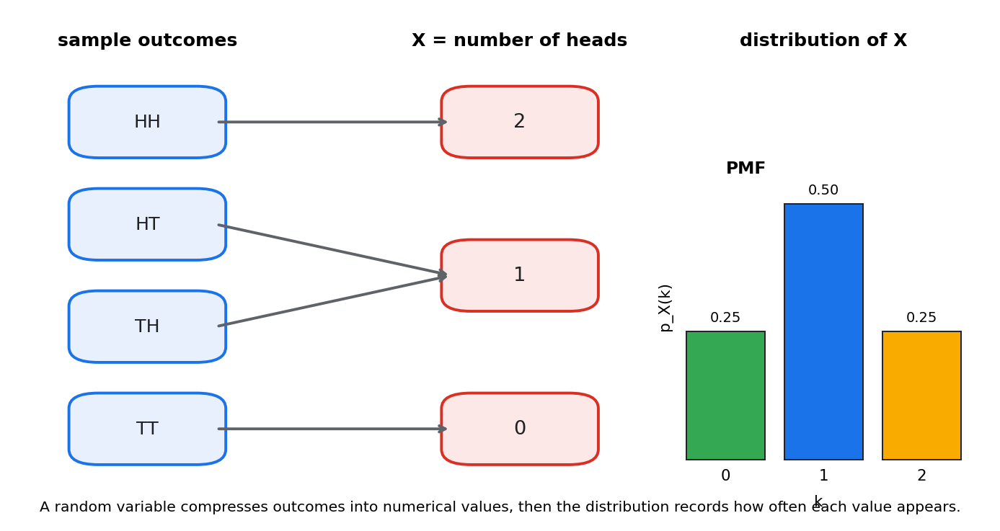
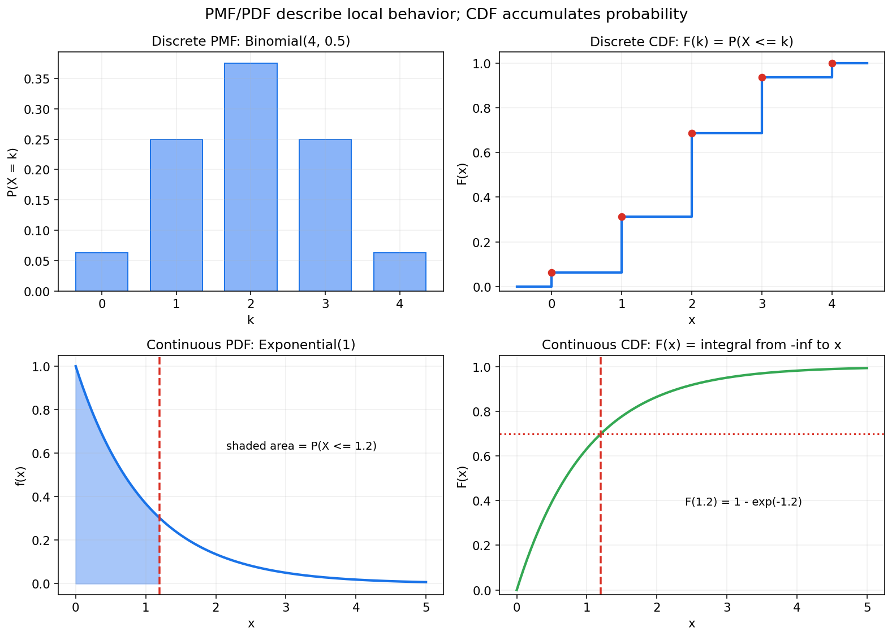
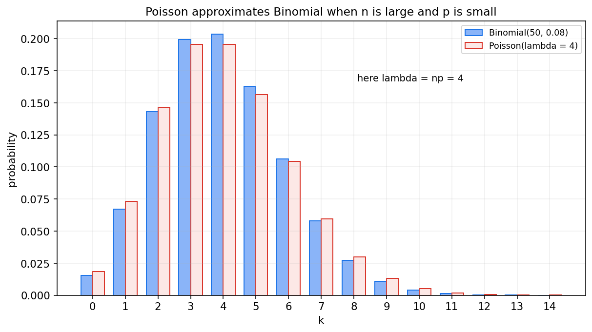
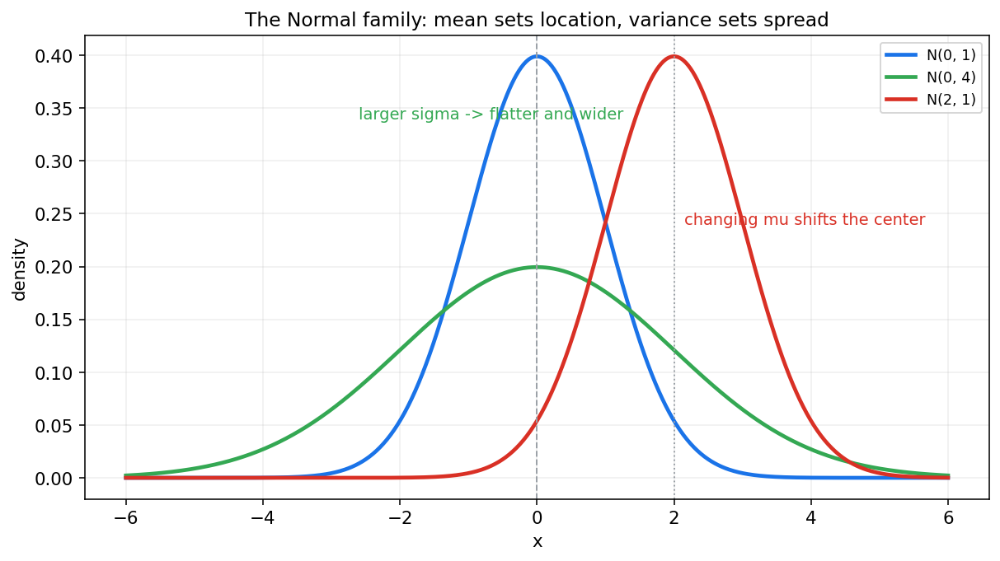

概率论第三章教程: 随机变量与常见分布
前两章一直在讨论事件是否发生.
但现实问题里, 我们更常关心的其实是数值结果:1. 一次试验得到的是多少次点击, 多少分钟等待, 多少分成绩?
2. 这些数值是离散地跳, 还是连续地变?
3. 我们怎样用一套统一语言描述这些数值出现的规律?这一章要做的, 就是把随机变量, 分布函数, 质量函数, 密度函数和一批最常见分布连成一条线.
0. 先看全章主线
第三章的主线可以压成下面这张图:
flowchart LR
A["随机试验结果<br/>原始样本点"] --> B["随机变量<br/>把结果映射成数值"]
B --> C["分布函数 CDF<br/>先描述累计概率"]
C --> D["离散型<br/>PMF 质量函数"]
C --> E["连续型<br/>PDF 密度函数"]
D --> F["Bernoulli, Binomial, Poisson,<br/>Geometric, Negative Binomial"]
E --> G["Uniform, Exponential,<br/>Gamma, Beta, Normal"]
F --> H["分布之间的联系<br/>近似, 极限, 建模模板"]
G --> H一句话概括这一章:
随机变量把随机结果变成数值对象,
分布函数描述累计概率,
PMF 和 PDF 则分别刻画离散值和连续值的局部结构.
1. 从事件到数值: 为什么需要随机变量
1.1 事件只回答发生与否, 很多问题却关心数值
前两章里, 我们常问:
- "事件 $A$ 会不会发生?"
- "已知 $B$ 发生, $A$ 的概率是多少?"
但在很多现实问题里, 真正关心的是一个数:
- 两次抛硬币一共出现几个正面?
- 一个小时内来了多少个顾客?
- 设备还要多久发生故障?
- 模型预测的概率值落在多少附近?
这时如果还只停留在事件语言, 就会很不方便.
1.2 随机变量本质上是一个映射
设样本空间为 $\Omega$, 随机变量 $X$ 本质上是一个把样本点映射到实数的函数:
也就是说, 每一个原始结果 $\omega \in \Omega$ 都被赋予一个数值 $X(\omega)$.
这一定义里最重要的词不是"变量", 而是"映射".
随机变量首先是一条把结果翻译成数字的规则,
然后我们才去研究这个数字会怎样分布.
1.3 一个非常典型的例子
做两次公平抛硬币, 样本空间为
定义随机变量
则

这个图表达了两件事:
- 随机变量把样本空间里的不同结果压缩成数值
- 多个样本点可能映射到同一个数值
所以:
- 样本点是原始结果
- 随机变量值是经过映射后的数值结果
这是两层对象, 不能混在一起.
1.4 一旦有了随机变量, 事件也能重新写
比如刚才的 $X$, 事件"至少出现一次正面"可以写成
事件"恰好一次正面"可以写成
这说明:
随机变量不是抛开事件另起炉灶,
而是把事件问题重新组织成更适合数值分析的形式.
2. 离散型与连续型: 数值结果会怎样出现
2.1 离散型随机变量
如果随机变量只取有限个或可数无穷多个值, 就称它是离散型随机变量.
例如:
- Bernoulli: $X \in \{0,1\}$
- 骰子点数: $X \in \{1,2,3,4,5,6\}$
- 抛硬币出现正面的个数: $X \in \{0,1,\dots,n\}$
- 单位时间内到达的人数: $X \in \{0,1,2,\dots\}$
离散型的核心特征是:
概率集中在一个个具体点上.
2.2 连续型随机变量
如果随机变量的取值落在某些区间上, 并且概率通过积分来表达, 就称它是连续型随机变量.
例如:
- 等车时间
- 零件寿命
- 测量误差
- 身高, 体重, 温度等近似连续量
连续型的核心特征是:
概率不是压在单个点上, 而是分布在整个区间上.
2.3 先别急着背定义, 先抓住直觉区别
可以把两者直观地区分成:
- 离散型: "数一个个格子"
- 连续型: "量一段段面积"
这也是为什么后面会分别出现:
- 概率质量函数 PMF
- 概率密度函数 PDF
2.4 混合型先暂时放一边
现实里还可能出现既有点质量又有连续部分的分布, 比如:
- 先有一定概率直接故障
- 否则寿命服从连续分布
这种叫混合型分布.
本章主线先专注离散型和连续型, 混合情形不展开.
3. 分布函数: 先用累计概率统一描述
3.1 定义
对任意随机变量 $X$, 它的分布函数定义为
这就是所谓的 CDF, cumulative distribution function.
这一定义非常重要, 因为:
无论 $X$ 是离散还是连续, CDF 都可以统一定义.
3.2 CDF 到底在说什么
$F_X(x)$ 回答的是:
随机变量的取值落在 $x$ 左边的概率有多大?
它不是某个点的局部信息, 而是从 $-\infty$ 一路累积到 $x$ 的总概率.
3.3 CDF 的几个基本性质
任意分布函数都满足:
- 单调不减
若 $x_1 < x_2$, 则
- 右连续
- 左右极限
这些性质都很自然:
- 累积区间越往右, 总概率不可能减少
- 左边完全还没覆盖到时概率应为 0
- 右边全覆盖以后总概率应为 1
3.4 一个离散例子
还是刚才的 $X$ = 两次抛硬币中正面的个数.
其分布为:
则分布函数为
你会看到, 离散型的 CDF 常常是阶梯状的.
3.5 一个连续例子
若等待时间 $T$ 服从参数为 $\lambda$ 的指数分布, 那么
这时 CDF 是一条平滑上升曲线.
3.6 CDF 和区间概率
一旦知道 CDF, 很多区间概率都能直接读出来:
这条公式对离散型和连续型都成立.
所以 CDF 是最统一的总入口.
4. PMF 与 PDF: 局部结构怎样表达
4.1 离散型的概率质量函数 PMF
对离散型随机变量 $X$, 它的概率质量函数定义为
或者在取值点 $x_k$ 上写成
PMF 直接告诉你:
某个具体数值点本身就有多大概率.
并且必须满足:
4.2 连续型的概率密度函数 PDF
对连续型随机变量 $X$, 若存在函数 $f_X(x)$ 使得
则称 $f_X(x)$ 是 $X$ 的概率密度函数.
这时区间概率由积分给出:
并且
4.3 密度不是概率
这是本章第一大易错点.
对连续型随机变量来说:
对任意单点都成立.
所以 $f_X(x)$ 不是点概率, 而是"单位长度上的概率浓度".
真正的概率来自面积, 不是来自曲线在某一点的高度.
4.4 PMF, PDF, CDF 放在一张图里看

这张图最好记住四句话:
- PMF 看的是离散点上的概率
- PDF 看的是连续区间上的概率密度
- CDF 看的是累计到当前位置为止的总概率
- 对连续型来说, 区间面积才是概率
4.5 PMF 和 PDF 怎样连接到 CDF
离散型时:
连续型时:
如果 $F_X$ 在某点可导, 则
这就是三者之间最核心的联系.
5. Bernoulli 与 Binomial: 0-1 试验和重复试验
5.1 Bernoulli 分布
最简单的离散分布就是一次成功/失败试验.
设
并且
则称 $X$ 服从参数为 $p$ 的 Bernoulli 分布, 记作
其 PMF 可以写成
它出现的场景非常多:
- 点击/未点击
- 转化/未转化
- 检测阳性/阴性
- 分类正确/错误
5.2 Binomial 分布
如果做 $n$ 次相互独立的 Bernoulli 试验, 每次成功概率都为 $p$, 令
则 $X$ 服从 Binomial 分布:
其 PMF 为
这条公式的含义很清楚:
- $\binom{n}{k}$: 成功出现在哪 $k$ 个位置
- $p^k$: 那 $k$ 次成功
- $(1-p)^{n-k}$: 其余 $n-k$ 次失败
5.3 Bernoulli 和 Binomial 的关系
Bernoulli 其实是 Binomial 的特例:
所以 Binomial 本质上是把一次 0-1 试验复制了 $n$ 次.
5.4 什么时候该想到 Binomial
如果你看到下面这类描述, 就应该很快想到 Binomial:
- 固定做 $n$ 次试验
- 每次只有成功/失败两种结果
- 每次成功概率相同
- 各次相互独立
例如:
- 100 个用户里有多少人点击
- 20 个零件里有多少个合格
- 10 道判断题里做对多少道
6. Poisson 分布: 稀有事件计数模板
6.1 它在描述什么
Poisson 分布通常用来描述:
在固定时间, 固定区域, 固定体积里, 某类稀疏事件发生了多少次
例如:
- 1 分钟内来电次数
- 1 平方厘米金属表面的缺陷数
- 1 小时内网站异常告警数
6.2 定义
若随机变量 $X$ 满足
则称 $X$ 服从参数为 $\lambda$ 的 Poisson 分布, 记作
其中 $\lambda>0$ 表示单位窗口内的平均事件次数.
6.3 为什么它常和 Binomial 联系在一起
如果一共有很多次试验, 但每次成功概率很小, 即:
- $n$ 很大
- $p$ 很小
- 但 $np=\lambda$ 保持在中等量级
那么
常常可以近似成

这张图体现的不是某个神秘公式, 而是一个非常实用的建模思想:
大量试验里的少量成功, 常常会走向 Poisson 计数模型.
6.4 什么时候该想到 Poisson
如果你看到:
- 单位时间内的到达数
- 单位空间内的缺陷数
- 某类稀有告警的发生次数
通常就要先问一句:
这是不是一个 Poisson 风格的计数问题?
7. Geometric 与 Negative Binomial: 等到第几次才成功
7.1 Geometric 分布
如果独立重复做 Bernoulli 试验, 每次成功概率为 $p$, 定义
则 $X$ 服从 Geometric 分布:
它描述的不是"成功了多少次", 而是:
要等多久, 才迎来第一次成功
7.2 Geometric 的典型场景
例如:
- 第几次拨号才接通
- 第几次实验才首次成功
- 第几个用户才首次转化
7.3 Negative Binomial 分布
如果不再只等第一次成功, 而是等到第 $r$ 次成功, 定义
则 $X$ 服从 Negative Binomial 分布:
这里要特别提醒:
不同教材对 Negative Binomial 的定义 convention 不完全相同.
有的书定义为"第 $r$ 次成功前经历的失败次数",
有的书定义为"直到第 $r$ 次成功所经历的总试验次数".
本章统一采用第二种.
7.4 Geometric 是 Negative Binomial 的特例
当 $r=1$ 时, Negative Binomial 就退化为 Geometric.
所以这两者的主线完全一致:
它们都是等待型分布, 只不过一个等第一次成功, 一个等第 $r$ 次成功.
8. Uniform 与 Exponential: 连续世界的基础模板
8.1 Uniform 分布
若随机变量在区间 $[a,b]$ 上均匀分布, 即区间内每个等长小段机会相同, 则称
其 PDF 为
它对应的是最朴素的连续均匀模型:
- 在一段时间里随机到达
- 在一根线段上随机取点
- 在某个区间里完全均匀采样
8.2 Exponential 分布
若随机变量 $T$ 的 PDF 为
则称 $T$ 服从参数为 $\lambda$ 的 Exponential 分布, 记作
它最典型的意义是:
等待下一次 Poisson 事件到来的时间
例如:
- 等待下一辆出租车
- 等待下一次服务器故障
- 等待下一位顾客进店
8.3 Exponential 的一个特殊气质
指数分布有一个著名性质叫无记忆性:
直觉上就是:
已经等了多久, 不会改变未来还要再等多久的分布形态
这个性质非常少见, 也是 Exponential 如此重要的原因之一.
8.4 Uniform 和 Exponential 的风格差别
这两个分布都很基础, 但对应的是两种完全不同的建模语气:
- Uniform: "区间内完全均匀, 没有偏好"
- Exponential: "等待时间, 并且越靠近 0 密度越大"
这类直觉比公式本身更值得留下.
9. Gamma 与 Beta: 更灵活的连续模板
9.1 Gamma 分布
Gamma 分布常用来描述非负连续量, 尤其是累计等待时间.
若 $X$ 的 PDF 为
其中 $\alpha>0,\lambda>0$, 则称
它可以理解成:
等待第 $\alpha$ 个 Poisson 事件所需的时间
当 $\alpha=1$ 时, Gamma 就退化为 Exponential.
9.2 Beta 分布
Beta 分布定义在 $[0,1]$ 上, 特别适合描述概率值本身.
若 $X$ 的 PDF 为
则称
其中 $\alpha,\beta>0$.
9.3 为什么 Beta 很重要
因为很多问题里的未知对象本身就是一个概率:
- 用户真实点击率
- 模型真实准确率
- 某药物真实有效率
而这些值天然落在 $[0,1]$ 上.
Beta 分布正好给出一族非常灵活的概率模板.
9.4 Gamma 和 Beta 各自擅长什么
- Gamma: 非负连续量, 累计等待时间, rate/intensity 相关问题
- Beta: 0 到 1 之间的概率量, 比例量, 先验建模
后面学贝叶斯统计时, 这两个分布会再次高频出现.
10. Normal 分布: 最常见也最核心的连续分布
10.1 定义
若随机变量 $X$ 的 PDF 为
则称 $X$ 服从均值为 $\mu$, 标准差为 $\sigma$ 的 Normal 分布, 记作
10.2 它在描述什么
Normal 分布最经典的出现背景是:
一个结果由许多微小, 近似独立的扰动共同叠加而成
例如:
- 测量误差
- 身高分布
- 聚合后的噪声
- 平均量的波动
它的重要性并不只是因为图像好看, 而是因为它和后面的中心极限定理深度相连.
10.3 参数怎样影响形状

这张图最该留下来的直觉是:
- $\mu$ 控制位置, 决定曲线中心在哪
- $\sigma$ 控制离散程度, 决定曲线有多宽, 多扁
10.4 标准正态
当
时, 称为标准正态分布, 记作
任何正态随机变量都可以标准化:
这个变换会在后面:
- 查表
- 区间估计
- 假设检验
- 中心极限定理
里反复使用.
11. 常见分布之间的联系与近似
真正学会分布, 不是会背很多公式, 而是看见它们之间的关系.
11.1 Bernoulli 是 Binomial 的特例
11.2 Geometric 是 Negative Binomial 的特例
当 $r=1$ 时:
11.3 Exponential 是 Gamma 的特例
当 $\alpha=1$ 时:
11.4 Poisson 可以近似 Binomial
当 $n$ 大, $p$ 小, 且 $\lambda=np$ 适中时:
11.5 Normal 可以近似很多聚合结果
当 Binomial 的
都足够大时, Binomial 常常可以进一步用 Normal 近似.
后面中心极限定理会告诉你:
为什么很多总和, 平均量和聚合误差会自然走向正态.
11.6 Poisson 过程和 Exponential 等待时间
如果事件按 Poisson 过程到来:
- 固定窗口里的事件次数服从 Poisson
- 相邻事件之间的等待时间服从 Exponential
- 等待第 $r$ 个事件的总时间服从 Gamma
这三者其实是一条连续的故事线, 不是三块互不相干的公式.
12. 什么时候该想到哪种分布
下面这张表可以作为本章最实用的速查入口:
| 场景特征 | 常见分布 |
|---|---|
| 一次成功/失败 | Bernoulli |
| 固定 $n$ 次试验的成功次数 | Binomial |
| 固定窗口内稀有事件次数 | Poisson |
| 等到第一次成功的试验次数 | Geometric |
| 等到第 $r$ 次成功的试验次数 | Negative Binomial |
| 区间内均匀取值 | Uniform |
| 等待下一次事件的时间 | Exponential |
| 等待多个事件累计到来时间 | Gamma |
| 描述 $[0,1]$ 上的概率值 | Beta |
| 多个小扰动叠加后的连续量 | Normal |
这张表最好不要机械记忆.
真正有用的方式是:
先识别场景类型, 再去匹配分布模板.
13. 本章主线总结
第三章压成最短的一条线, 就是:
- 随机变量是把样本结果映射成数值的函数
- 分布函数 $F_X(x)=P(X \le x)$ 统一描述累计概率
- 离散型用 PMF, 连续型用 PDF
- 对连续型来说, 概率来自区间面积, 不是点高度
- 常见分布本质上是现实随机现象反复出现的概率模板
如果这五句话稳住了, 后面多维分布, 期望方差, 抽样分布, 统计建模都会顺很多.
14. 典型题型与实战清单
这一章最常见的题型, 基本都可以归到下面几类:
- 从样本空间定义随机变量
- 明确映射规则
- 列出可能取值
- 由样本点概率汇总成分布
- 写 CDF
- 离散型常写成分段阶梯函数
- 连续型常通过积分得到
- PMF/PDF 与区间概率
- 离散型: 求和
- 连续型: 积分
- 识别分布类型
- 0-1, 计数, 等待, 区间均匀, 非负连续, 概率值, 正态噪声
- 分布之间的近似
- Binomial 到 Poisson
- Binomial 到 Normal
- Poisson 过程到 Exponential/Gamma
一个实战工作流可以直接记成:
先识别"数值对象是什么" -> 再看它是离散还是连续 -> 再选分布模板
15. 典型误区
误区 1: 把随机变量理解成"随机乱变的数"
更准确的理解应该是:
随机变量首先是一条映射规则.
误区 2: 忘记 CDF 是累计概率
$F_X(x)$ 不是点概率, 它是累计到 $x$ 左边为止的总概率.
误区 3: 把密度值当成概率
对连续型:
单点概率为 0, 只有面积才代表概率.
误区 4: 不区分"次数问题"和"等待问题"
- 成功次数常想到 Binomial
- 等待第一次或第 $r$ 次成功常想到 Geometric 或 Negative Binomial
误区 5: 背了很多分布名字, 却不知道它们各自描述什么
分布不是术语收藏册.
真正的重点是:
它们各自适合建模什么随机现象.
误区 6: 忽略 Negative Binomial 的定义 convention
不同资料对它的支持集和含义可能不同, 使用前一定先看清定义.
16. 和前后章节的连接点
这一章向后连接的路线非常清楚:
- 第四章多维随机变量
- 会把单变量分布推广到联合分布, 边缘分布, 条件分布
- 第五章期望与方差
- 分布一旦确定, 就可以继续压缩出中心, 波动和信息量
- 第七章抽样分布
- 样本均值, 样本方差等统计量本质上也是随机变量
- 第十二章以后贝叶斯统计
- Beta, Gamma, Normal 会作为重要先验和后验家族反复出现
所以第三章不是在背分布大全, 而是在为后面整套统计语言准备基本模板.
17. 和机器学习, 数据分析, 科研实践的连接点
如果你是带着机器学习目标来学这一章, 最值得提前记住的是:
- Bernoulli / Binomial
- 二分类标签
- 点击/转化建模
- 交叉熵和分类似然的基础
- Poisson
- 计数数据
- 到达流量
- 事件频次预测
- Beta
- 转化率, 准确率等概率值建模
- 贝叶斯 A/B 测试的常见先验
- Normal
- 噪声假设
- 最小二乘
- 高斯模型
- 深度学习里大量近似分析的底色
- Exponential / Gamma
- 生存分析
- 等待时间建模
- 过程到达与累计时间分析
所以这章的工程价值非常直接:
以后你看到数据类型, 就能更快联想到对应的概率模板和损失假设.
18. 本章收尾
第三章真正要留下来的, 不是十几个公式, 而是一种新的观察方式:
先把随机结果映射成数值,
再用分布描述这些数值怎样出现,
最后用常见分布模板去识别现实问题的结构.
如果这个观察方式建立起来了, 第四章进入多维随机变量时, 你就不会只看到更复杂的符号, 而会看到"单变量语言如何自然升级为联合语言".